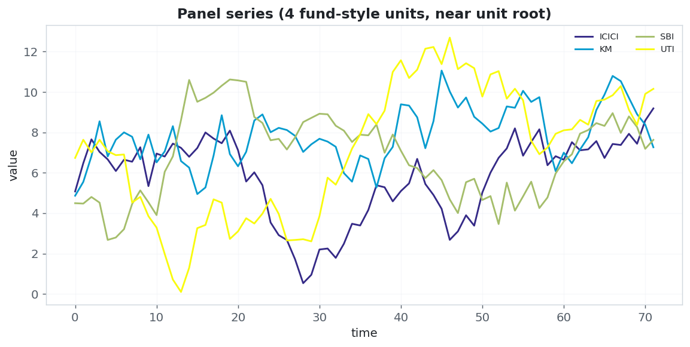
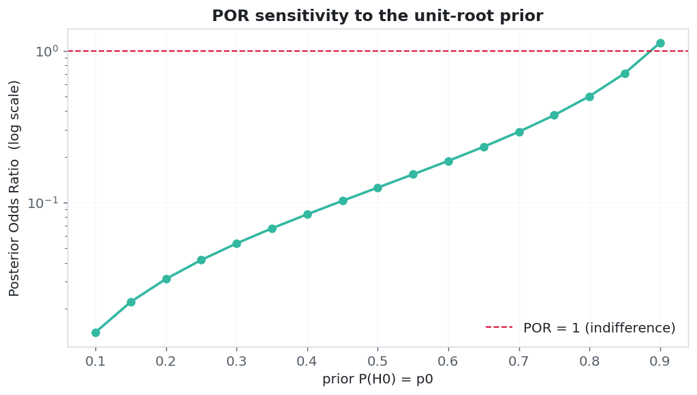
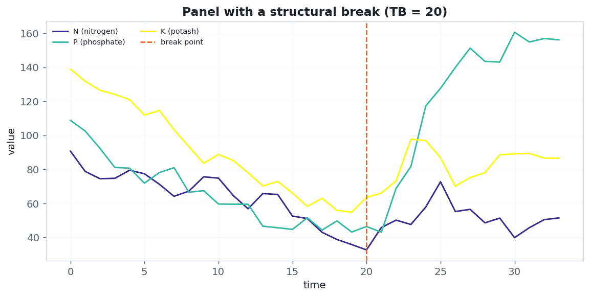
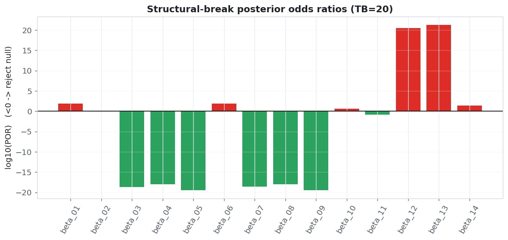
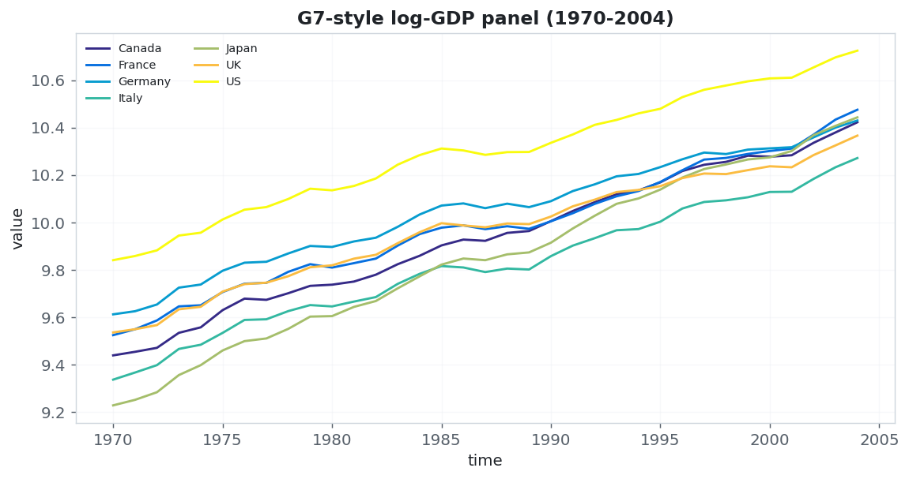
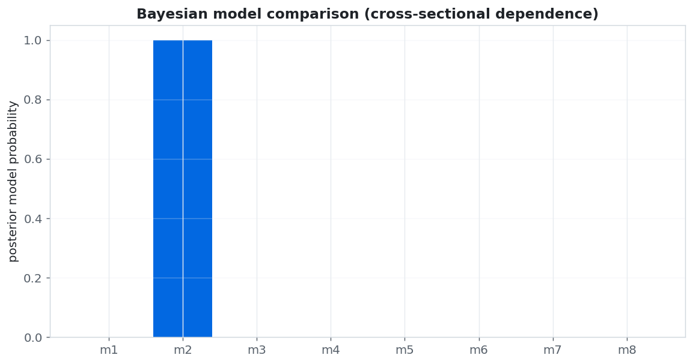
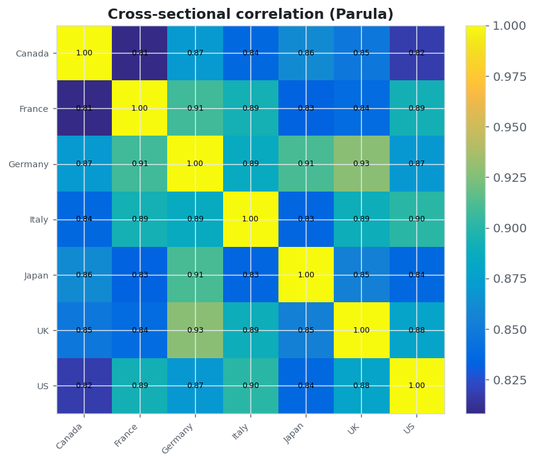
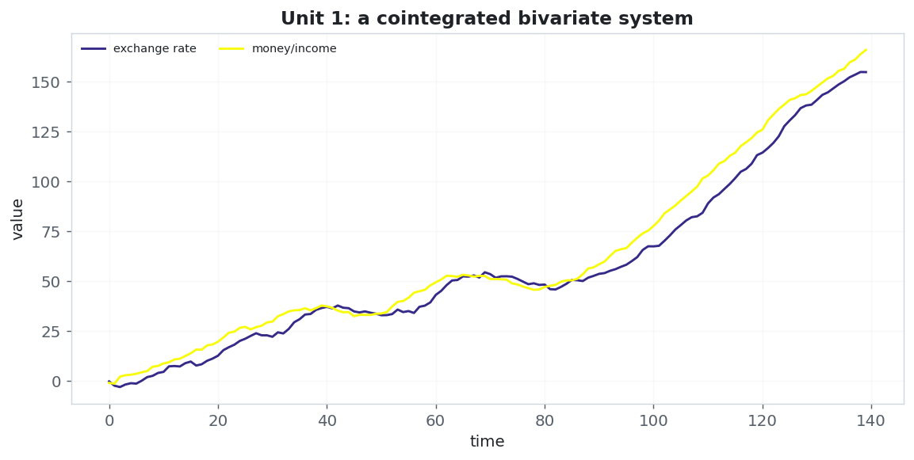
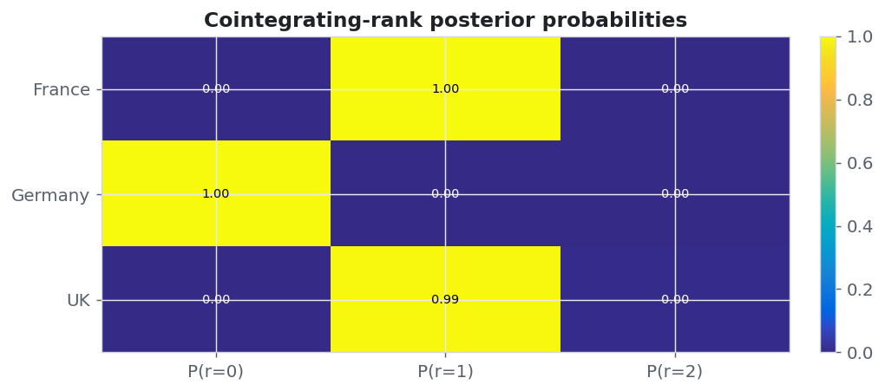
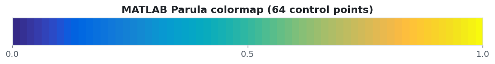

pybayescointur
Bayesian unit-root & cointegration tests for panel data — four published methodologies, one consistent API, publication-quality tables & visualisations.


pip install pybayescointur
Bayesian unit-root & cointegration tests for panel data — four published methodologies, one consistent API, publication-quality tables & visualisations.
pip install pybayescointur
Where the classical panel toolbox relies on asymptotics and a sharp null, pybayescointur integrates nuisance parameters out, treats the autoregressive root (and the cointegrating rank) as random, and returns directly interpretable posterior odds ratios, model probabilities and Bayes factors.
Posterior odds ratio with linear trend or augmentation terms.
Kumar, Chaturvedi & Afifa (2016)
Break in mean & variance — 8 hypotheses, 14 posterior odds ratios.
Kumar & Agiwal (2019)
Marginal-likelihood comparison of 8 competing models.
Meligkotsidou, Tzavalis & Vrontos
VECM with Savage–Dickey Bayes factors for the rank.
Koop, Leon-Gonzalez & Strachan (2006)
For a null H₀ against an alternative H₁, the posterior odds ratio factorises into the prior odds times the Bayes factor:
The Bayes factor integrates each model's parameters out of the likelihood, which automatically penalises complexity (an Occam factor):
Decision rule: β01 < 1 is evidence against the null (e.g. reject a unit root → trend stationary); β01 > 1 favours it. Pooling the cross-section (n units) with the time dimension (T) sharply raises the power to tell a unit root apart from a near-unit root. All marginal likelihoods are evaluated in log-space to avoid overflow.
Model yᵢₜ = μᵢ + δᵢt + uᵢₜ, uᵢₜ = ρ uᵢ,ₜ₋₁ + εᵢₜ. Test H₀: ρ=1 (difference stationary) vs H₁: a<ρ<1 (trend stationary).
res = pbc.bayesian_panel_unit_root(panel, model="augmented", k=2) res.por # < 1 -> reject the unit root


| specification | rho_hat | se(rho) | sigma^2 | POR (beta_01) | decision |
|---|---|---|---|---|---|
| linear trend | 0.9157 | 0.0241 | 0.850 | 4.358e+04 | unit root |
| trend + aug(order 1) | 0.9125 | 0.0247 | 0.852 | 1.186e-01 | trend stationary |
| trend + aug(order 2) | 0.9136 | 0.0252 | 0.855 | 1.254e-01 | trend stationary |
A PAR(1) panel with a common break at TB that may shift both the mean and the error variance. Eight nested hypotheses produce 14 posterior odds ratios.


| POR | comparison | value | decision |
|---|---|---|---|
| beta_01 | DS, break in var vs TS, break in mean & var | 7.417e+01 | accept null |
| beta_02 | TS, break in var vs TS, break in mean & var | 8.993e-01 | reject null |
| beta_03 | TS, break in mean vs TS, break in mean & var | 2.426e-19 | reject null |
| beta_04 | DS, no break vs TS, break in mean & var | 9.381e-19 | reject null |
| beta_05 | TS, no break vs TS, break in mean & var | 3.574e-20 | reject null |
| beta_06 | DS, break in var vs TS, break in var | 8.248e+01 | accept null |
| beta_07 | TS, break in mean vs TS, break in var | 2.698e-19 | reject null |
| beta_08 | DS, no break vs TS, break in var | 1.043e-18 | reject null |
| beta_09 | TS, no break vs TS, break in var | 3.974e-20 | reject null |
| beta_10 | DS, no break vs TS, break in mean | 3.867e+00 | accept null |
| beta_11 | TS, no break vs TS, break in mean | 1.473e-01 | reject null |
| beta_12 | DS, break in var vs TS, break in mean | 3.057e+20 | accept null |
| beta_13 | DS, break in var vs TS, no break | 2.075e+21 | accept null |
| beta_14 | DS, no break vs TS, no break | 2.625e+01 | accept null |
Eight models — {stationary, random walk} × {trend, no trend} × {independent, cross-dependent} — ranked by posterior probability. The estimated correlation matrix quantifies the co-movement across units.



| model | description | log_ML | post_prob |
|---|---|---|---|
| m2 | stationary, no trend, cross-dependence | 684.57 | 1.0000 |
| m4 | stationary, trend, cross-dependence | 659.94 | 0.0000 |
| m6 | pure random walk, cross-dependence | 589.87 | 0.0000 |
| m8 | random walk + drift, cross-dependence | 566.51 | 0.0000 |
| m3 | stationary, trend, independent | 376.11 | 0.0000 |
| m1 | stationary, no trend, independent | 358.00 | 0.0000 |
| m5 | pure random walk, independent | -47.49 | 0.0000 |
| m7 | random walk + drift, independent | -70.02 | 0.0000 |
| country | Canada | France | Germany | Italy | Japan | UK | US |
|---|---|---|---|---|---|---|---|
| Canada | 1.000000 | 0.810000 | 0.870000 | 0.840000 | 0.860000 | 0.850000 | 0.820000 |
| France | 0.810000 | 1.000000 | 0.910000 | 0.890000 | 0.830000 | 0.840000 | 0.890000 |
| Germany | 0.870000 | 0.910000 | 1.000000 | 0.890000 | 0.910000 | 0.930000 | 0.870000 |
| Italy | 0.840000 | 0.890000 | 0.890000 | 1.000000 | 0.830000 | 0.890000 | 0.900000 |
| Japan | 0.860000 | 0.830000 | 0.910000 | 0.830000 | 1.000000 | 0.850000 | 0.840000 |
| UK | 0.850000 | 0.840000 | 0.930000 | 0.890000 | 0.850000 | 1.000000 | 0.880000 |
| US | 0.820000 | 0.890000 | 0.870000 | 0.900000 | 0.840000 | 0.880000 | 1.000000 |
Each unit has its own VECM with a possibly unit-specific cointegrating rank rᵢ. Ranks are inferred via Savage–Dickey Bayes factors against the no-cointegration model.


| unit | MAP_rank | P(r=0) | P(r=1) | P(r=2) |
|---|---|---|---|---|
| France | 1 | 0.000 | 1.000 | 0.000 |
| Germany | 0 | 1.000 | 0.000 | 0.000 |
| UK | 1 | 0.002 | 0.993 | 0.005 |
Every heatmap defaults to the MATLAB Parula colormap,
reproduced from its 64 RGB control points. Helpers:
parula_colors,
matlab_jet_colors,
turbo_colors,
resolve_colorscale.
